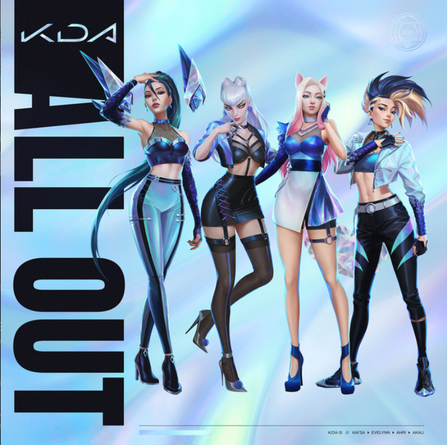
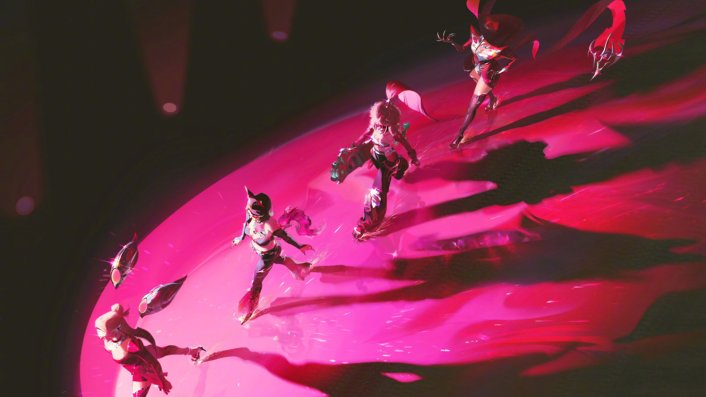
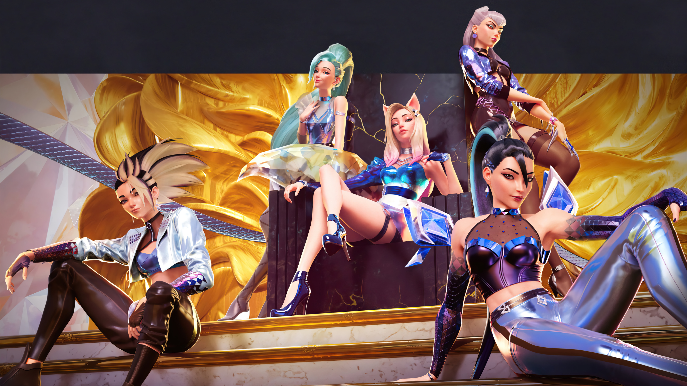

Все (почти) музыкальные клипы группы

В ноябре 2020 года, K/DA представили свой дебютный мини-альбом «All Out» состоящий из 5 песен. В целом релиз насчитывает более 1 миллиарда комбинированных прослушиваний.

I'm a fire starter
Work a lil harder
Got me fired up
Imma burn it down like
:P
Группа дебютировала на Церемонии открытия финала Чемпионата мира по League of Legends 2018 с песней «POP/STARS». Видеоклип на композицию стал вирусным. Он набрал более 100 миллионов просмотров на YouTube за первый месяц, а на октябрь 2022 года насчитывает более 500 миллионов просмотров, что делает его одним из самых просматриваемых дебютных видеоклипов среди всех K-pop групп. В 2022 году, сингл «Pop/Stars» получил платиновый статус от Американской ассоциации звукозаписывающих компаний за продажу более 1 миллиона копий. K/DA стали первой в истории К-Pop гёрл-группой с этим достижением.
Клип «POP/STARS» на YouTube
Она была выпущена 28 октября 2020 года в качестве второго сингла из дебютного мини-альбома группы All Out. На другой день после релиза песня попала в чарты крупнейших музыкальных сайтов Южной Кореи, таких как Melon, Genie, Bugs и Flo. Песня дебютировала под номером 2 в World Digital Song Sales в США всего через полтора дня после выпуска.
Клип «MORE» на YouTube